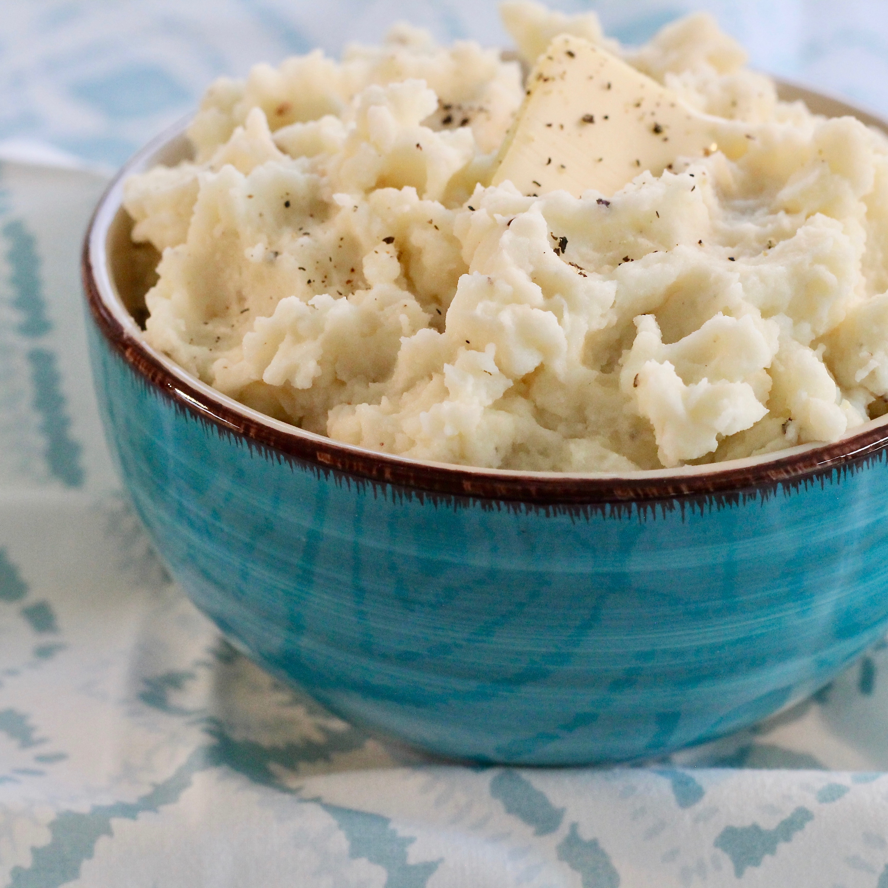

Mash Potato Recipe!
>
Descriptions
Hello! This page is about the making of a basic mash potato
that you can make fairly quick and at the same time delicious!
Without a further due, below's the list of ingredients you'll
need to make this dish.
Ingredients
- 2 pounds baking potatoes, peeled and quartered
- 2 tablespoons of butter
- 1 cup of milk
- salt and pepper to taste
After you've gathered all those ingredients listed above, nows
the time to start the making! Look at the following steps.
Steps
- Bring a pot of salted water to a boil. Add potatoes and cook
until tender but still firm, about 15 minutes; drain.
- In a small saucepan heat butter and milk over low heat until
butter is melted. Using a potato masher or electric beater, slowly
blend milk mixture into potatoes until smooth and creamy. Season
with salt and pepper to taste.